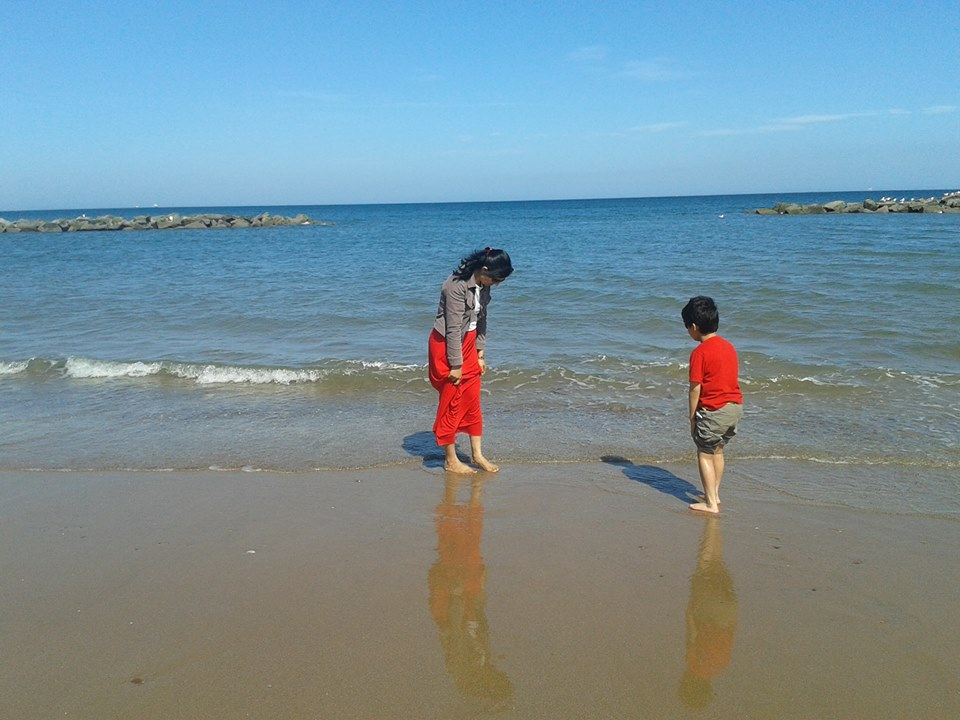

প্রচ্ছদকাহিনী :
পরম্পরা :
উৎসব :
song - গীত :
আনুষঙ্গিক :
চিত্রকলা :
ট্রেভেলগ :
স্বাস্থ্য :
অন্তরে অন্দরে :

পাহাড়চূড়ায় পৌঁছে টুরিস্টদের জন্য বানানো সিঁড়ি বেয়ে নামতে হয়েছে পাহাড়ের মাঝামাঝি পাইরেটস কেইভে । উচ্চতাভীতির কারণে নিচের দিকে তাকাতে পারছিলামনা। কেইভে ঢুকলাম, কেমন গা ছম ছম করা অনুভুতি। অন্ধকার স্যাঁতস্যাঁতে ভেতরটা। খুব নিচু ছাদ আর তার উপর ছাদ থেকে বেরিয়ে আসা ধারালো পাথর। এই পাথরগুলো নাকি ধীরে ধীরে বাড়ে। এতই ধীরে যে এক ইঞ্চি বড় হতে লাগে ১০০/১৫০ বছর! প্রতি মুহুর্তেই ভয় লাগছিল পাহাড়ধ্বসের।
অনেক নিচে সাগরের দিকে দেখাতেই দেখলাম আইবিজায় কাছে ছোট্ট একটা দ্বীপ। মাঝখানে সুবিশাল প্রাসাদোপম সাদা বাড়ি। প্রায় পুরো দ্বীপটা জুড়ে এই বাড়ি। রাশিয়ান এক কোটিপতি এই দ্বীপটি কিনে সাজিয়েছেন তার স্বর্গ, যেখানে তিনি বছরে একবার ৩/৪ দিনের জন্য বেরাতে আসেন! বিত্তবানদের কী অপচয়!
একদিন গ্লাসবটম বোটে চড়লাম। এই বোটের বিশেষত্ব হল বোটের মাঝামাঝি গ্লাস বসানো থাকে। টুরিস্টদের এই বোটে করে সাগরের মাঝে নিয়ে যাওয়া হয়। বোট এ বসে সাগরের তলদেশ দেখা যায় বলে এই বোট এ চড়ার জন্য লম্বা লাইন লেগে থাকে। সমুদ্রে নামার পর আমার আর আমার ছেলের
আনন্দের মাঝে খুব একটা তফাত ছিলোনা!
আনন্দের মাঝে খুব একটা তফাত ছিলোনা!
আমি দেখছিলাম সাগরের নিচে সাদা বালির উপরে নানা রঙের অসংখ্য মাছ, শৈবাল। হঠাৎ করেই দেখি অন্ধকার! আসলে সাগরের গভীরতা ওইখানেই শুরু হয়েছে। বোট নিয়ে গেল সাগরের মাঝে মাথা উঁচু করা একটা পাহাড়ের কাছে। সেখানে অন্ধকার এক গুহায় ঢুকলো। বাইরে থেকে অন্ধকার মনে হলেও ভেতরটা আলোকিত ছিল। সূর্যের রশ্মি পানির সাথে মিশে গুহার গায়ে রং বেরং এর নকশা তইরি করছিল, অপূর্ব! এই বোট প্রতিদিন দুই- তিন বার টুরিস্টদের নিয়ে আসে আর সাথে থাকে ব্রেড। ব্রেড ছিঁড়ে ছিঁড়ে পানিতে ফেললে অনেক মাছ এসে জড়ো হয়। লম্বায় দেশের মাগুরের মতন। কেইভ থেকে বেরিয়ে ফিরতি পথে ড্রাইভার বোট থামিয়ে আমাদের দেখাল পানির নিচে একটা ফিশিং বোট। এটা ১৯৮১ তে আগুন লেগে ডুবে গিয়েছিল। বোটটার গায়ে শৈবাল জন্মেছে। বারবার মনে হচ্ছিল এখান থেকে গেলেই বাঁচি! বোট আবার থামলো। সবাই উৎসুক হয়ে তাকাতেই ড্রাইভার বললোএকটা ম্যাজিক দেখাবে। বলে দুই বার শিস দিল, দেখি ঝাঁকে ঝাঁকে ছোট ছোট মাছ চলে এসেছে!! লোকটা বললো"এইগুলি আমার পোষা"! মানুষের ডাকে মাছ এইভাবে আসে, জানতাম না। বিচে অনেক নারিকেলেরখোলে তৈরি শোপিস, ঝিনুকের গয়নার দোকান । অনেক পোস্টকার্ড দেখলাম, সবই সাগর-পাহাড়ের ছবি। ফিরে আসার সময় আমাদের সবারই মন খারাপ। এরপর ছুটিতে কত জায়গায় ঘুরেছি, শরতের ছুটিতে প্রথম সমুদ্রস্নান, সূর্যাস্তের কথাই অবসরে প্রায় মনে পড়ে।
(আমি লেখিকা নই, এই প্রথম ভ্রমণকাহিনী লিখলাম। আশা করি ত্রুটি ক্ষমাসুন্দর দৃষ্টিতে দেখা হবে। সবাইকে দূর দেশ থেকে জানাই শারদীয় শুভেচ্ছা।)
পৃষ্ঠা নং - ১ ২